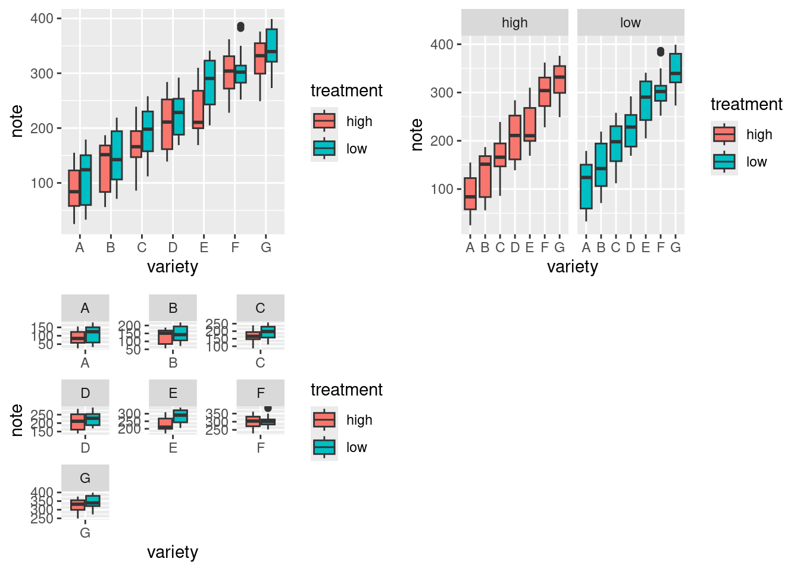
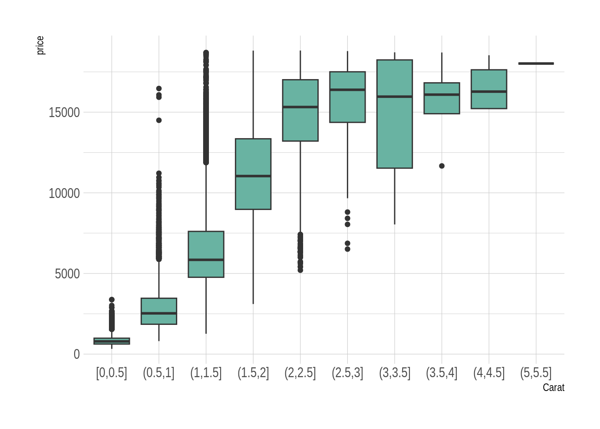
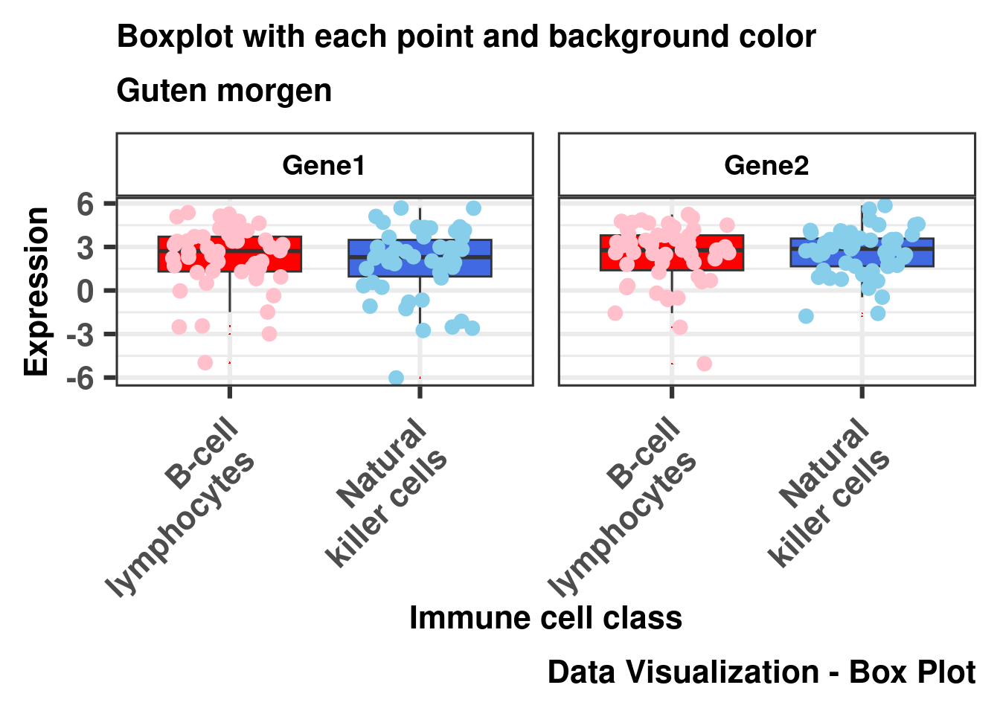
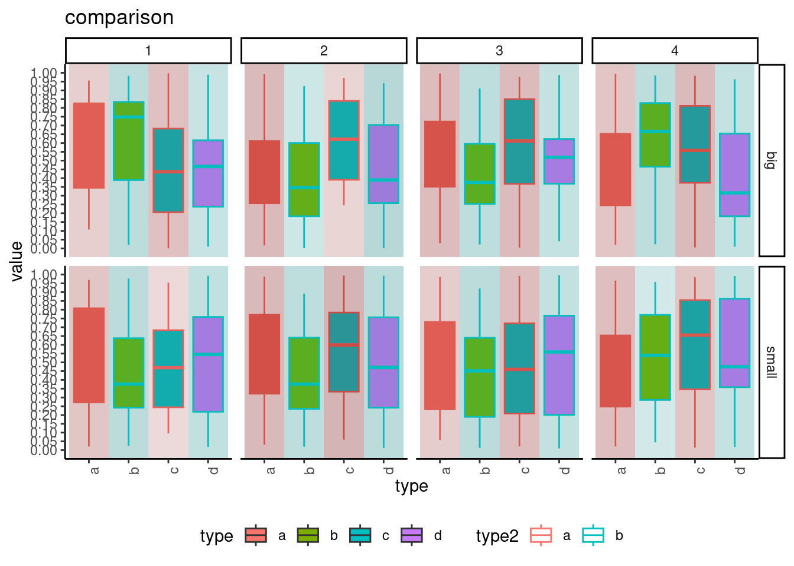
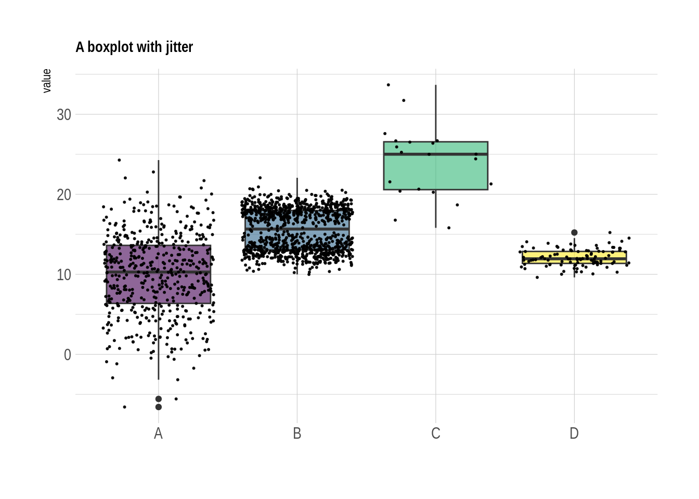
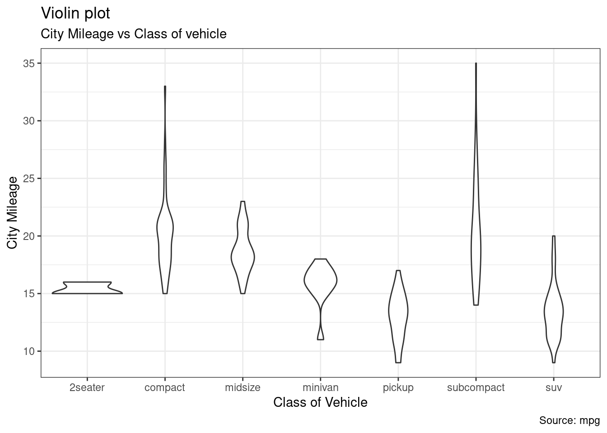
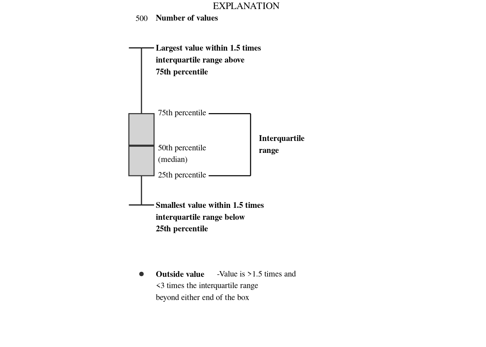

Box Plot
Grouped Boxplot
# create a data frame
variety=rep(LETTERS[1:7], each=40)
treatment=rep(c("high","low"),each=20)
note=seq(1:280)+sample(1:150, 280, replace=T)
data=data.frame(variety, treatment , note)
# grouped boxplot
p0 <- ggplot(data, aes(x=variety, y=note, fill=treatment)) +
geom_boxplot()
# One box per treatment
p1 <- ggplot(data, aes(x=variety, y=note, fill=treatment)) +
geom_boxplot() +
facet_wrap(~treatment)
# one box per variety
p2 <- ggplot(data, aes(x=variety, y=note, fill=treatment)) +
geom_boxplot() +
facet_wrap(~variety, scale="free")
grid.arrange(p0, p1, p2, ncol=2)
Ordered Boxplot
Basic Order by Median
theme_set(theme_classic())
# Using number of observation per group
o1 <- mpg %>%
mutate(class = fct_reorder(class, hwy, .fun='length' )) %>%
ggplot( aes(x=class, y=hwy, fill=class)) +
geom_boxplot() +
xlab("class") +
labs(subtitle="Order by observation per group") +
theme(legend.position="none") +
xlab("") +
xlab("")
# Using median
o2 <-mpg %>%
mutate(class = fct_reorder(class, hwy, .fun='median')) %>%
ggplot( aes(x=reorder(class, hwy), y=hwy, fill=class)) +
geom_boxplot() +
xlab("class") +
labs(subtitle="Order by median") +
theme(legend.position="none") +
xlab("")
grid.arrange(o1,o2,ncol=2)Cut for Continuous Variable
library(hrbrthemes)
# Start with the diamonds dataset, natively available in R:
diamonds %>%
# Add a new column called 'bin': cut the initial 'carat' in bins
mutate( bin=cut_width(carat, width=0.5, boundary=0) ) %>%
# plot
ggplot( aes(x=bin, y=price) ) +
geom_boxplot(fill="#69b3a2") +
theme_ipsum() +
xlab("Carat")
Color
Basic Color scale_fill_brewer
# Top Left: Set a unique color with fill, colour, and alpha
P1 <- ggplot(mpg, aes(x=class, y=hwy)) +
geom_boxplot(color="red", fill="orange", alpha=0.2)
# Top Right: Set a different color for each group
P2 <- ggplot(mpg, aes(x=class, y=hwy, fill=class)) +
geom_boxplot(alpha=0.3) +
theme(legend.position="none")
# Bottom Left
P3 <- ggplot(mpg, aes(x=class, y=hwy, fill=class)) +
geom_boxplot(alpha=0.3) +
theme(legend.position="none") +
scale_fill_brewer(palette="BuPu")
# Bottom Right
P4 <- ggplot(mpg, aes(x=class, y=hwy, fill=class)) +
geom_boxplot(alpha=0.3) +
theme(legend.position="none") +
scale_fill_brewer(palette="Dark2")
## Alternative for P4
# ggplot(mpg, aes(x=class, y=hwy, fill=class)) +
# geom_boxplot(alpha=0.3) +
# theme(legend.position="none") +
# scale_fill_manual(values = c("compact" = "#F8766D", "midsize" = "#7CAE00", "suv" = "#00BFC4", "2seater" = "#C77CFF", "minivan" = "#FFA500", "pickup" = "#00CC99", "subcompact" = "#619CFF"))
grid.arrange(P1, P2, P3, P4, ncol=2)Highlighting a group
library("hrbrthemes")
# Work with the natively available mpg dataset
mpg %>%
# Add a column called 'type': do we want to highlight the group or not?
mutate( type=ifelse(class=="subcompact","Highlighted","Normal")) %>%
# Build the boxplot. In the 'fill' argument, give this column
ggplot( aes(x=class, y=hwy, fill=type, alpha=type)) +
geom_boxplot() +
scale_fill_manual(values=c("#69b3a2", "grey")) +
scale_alpha_manual(values=c(1,0.1)) +
theme_ipsum() +
theme(legend.position = "none") +
xlab("")Independent Color
df <- data.frame(
Group = c(rep('B-cell\nlymphocytes',50), rep('Natural\nkiller cells', 50)),
log2(matrix(rexp(200, rate=.1), ncol=2)))
colnames(df) <- c('Group', 'Gene1', 'Gene2')
require("reshape2")
df <- melt(df, id.vars = c('Group'))
colnames(df) <- c('Group', 'Gene', 'Expression')
ggplot(data = df, aes(x = Group, y = Expression)) +
geom_boxplot(
position = position_dodge(width=0.5),
outlier.shape = 17,
outlier.colour = 'red2',
outlier.size = 0.1,
aes(fill = Group)) +
scale_fill_manual(values = c( 'red', 'royalblue')) + # for boxplot
#Add the scatter points (treats outliers same as 'inliers')
geom_jitter(
position = position_jitter(width = 0.3),
size = 3.0,
aes(colour = Group)) +
scale_color_manual(values = c('pink', 'skyblue')) + # for scatter plot dots
# facet by Gene
facet_wrap(~ Gene, ncol = 2) +
#Set the size of the plotting window
theme_bw(base_size=24) +
#Modify various aspects of the plot text and legend
theme(
legend.position = 'none',
legend.background = element_rect(),
plot.title = element_text(angle = 0, size = 16, face = 'bold', vjust = 1),
plot.subtitle = element_text(angle = 0, size = 16, face = 'bold', vjust = 1),
plot.caption = element_text(angle = 0, size = 16, face = 'bold', vjust = 1),
axis.text.x = element_text(angle = 45, size = 16, face = 'bold', hjust = 1.10),
axis.text.y = element_text(angle = 0, size = 16, face = 'bold', vjust = 0.5),
axis.title = element_text(size = 16, face = 'bold'),
axis.title.x = element_text(size = 16, face = 'bold'),
axis.title.y = element_text(size = 16, face = 'bold'),
#Legend
legend.key = element_blank(), #removes the border
legend.key.size = unit(1, 'cm'), #Sets overall area/size of the legend
legend.text = element_text(size = 14, face = 'bold'), #Text size
title=element_text(size = 14, face = 'bold'),
#facet wrap
strip.text.x = element_text(size = 14, face = 'bold'),
strip.text.y = element_text(size = 14, face = 'bold', angle=0),
strip.background = element_rect(fill = 'white'),
strip.text = element_text(size = 14, face = 'bold', colour = 'black'))+
#Change the size of the icons/symbols in the legend
guides(colour = guide_legend(override.aes = list(size = 2.5))) +
#Set x- and y-axes labels
xlab('Immune cell class') +
ylab('Expression') +
labs(title = 'Boxplot with each point and background color',
subtitle = 'Guten morgen',
caption = 'Data Visualization - Box Plot')
Backgroud
value = runif(n = 1000)
type = rep(c("a","b","c","d"),250)
type2 = rep(c("a","b"),500)
number = sample(1:4, 1000, replace=TRUE, prob=c(0.25, 0.25, 0.25, 0.25) )
feature = c(rep("small",500),rep("big",500))
nFac <- 4 # define number of factors (types) here
rects <- data.frame(xmin = head(seq <- seq(0.5, nFac + .5, 1), -1),
xmax = tail(seq, -1), rect_type = c("a", "c")) #set your divisions here
allResults <- data.frame(value,type,type2,number,feature, rects)
ggplot(allResults, aes(y=value, x=type)) + geom_boxplot(aes(fill = type, col=type2)) +
geom_rect(aes(xmin = xmin, xmax = xmax, ymin = -Inf, ymax = Inf, fill = rect_type), alpha = 0.009) +
ggtitle("comparison") + facet_grid(feature ~ number) +
theme(legend.position = "bottom",axis.text.x = element_text(angle = 90, hjust = 1)) +
scale_y_continuous(breaks = seq(0, 1, by = 0.05),limits = c(0,1))
Text
stat=“identity”
DummyA <- readRDS(file = "./01_Datasets/Cylinder_Baseline.rds")
ggplot(DummyA,aes(x=Subgroup,fill=Treatment))+
geom_boxplot(aes(lower=` Mean`-` SD`,
upper=` Mean`+` SD`,
middle=` Mean`,
ymin=` Min`,
ymax=` Max`),
stat="identity")+
geom_text(aes(label=`P-Value`, x=Subgroup, y=5.5),hjust=0.4)+
coord_flip() +
theme_bw() +
theme(legend.position = "bottom") +
labs(x = "Subgroups",
y = "Cylinder [D]",
title = "Subjective refraction Cylinder at Baseline")DummyB <- readRDS(file = "./01_Datasets/MeanRotation.rds" )
ggplot(DummyB, aes(x=Visit,fill=Treatment))+
geom_boxplot(aes(lower=mean-SD,
upper=mean+SD,
middle=mean,
ymin=min,
ymax=max),
stat="identity")+
geom_text(aes(label=n, x=Visit, y=mean+1.5), vjust=1.3, color="white",
position = position_dodge(0.8), size=3.5)+
geom_text(aes(label=P,colour=label_color, x=Visit, y=25),hjust=0.4, size=3.5,show.legend = FALSE)+
scale_fill_brewer(palette="Paired")+
facet_wrap(.~ Subgroup, nrow = 2)+
coord_flip() +
theme_bw() +
theme(legend.position = "bottom") +
labs(x = "",
y = "Mean absolute rotation",
title = "Mean absolute rotation by visit",
caption = "Data Visualization - Box Plot")Statistics Text
df <- mtcars
df$cyl <- as.factor(df$cyl)
get_box_stats <- function(y, upper_limit = max(df$mpg) * 1.15) {
return(data.frame(
y = 0.95 * upper_limit,
label = paste(
"Count =", length(y), "\n",
"Mean =", round(mean(y), 2), "\n",
"Median =", round(median(y), 2), "\n"
)
))
}
ggplot(df, aes(x = cyl, y = mpg, fill = cyl)) +
geom_boxplot() +
scale_fill_manual(values = c("#00BFC4", "#F8766D", "#7CAE00")) +
stat_summary(fun.data = get_box_stats, geom = "text", hjust = 0.5, vjust = 0.9) +
labs(
title = "Stat_summary() function",
subtitle = "with summary statistics",
caption = "Data Visualization - Box Plot",
x = "Number of cylinders",
y = "Miles per gallon"
) +
theme_classic()+
theme(
plot.title = element_text(color = "#0099f8", size = 16, face = "bold", hjust = 0.5),
plot.subtitle = element_text(face = "bold.italic", hjust = 0.5),
plot.caption = element_text(face = "italic")
)Jitter
Basic Jitter
library(hrbrthemes)
library(viridis)
# create a dataset
data <- data.frame(
name=c( rep("A",500), rep("B",500), rep("B",500), rep("C",20), rep('D', 100) ),
value=c( rnorm(500, 10, 5), rnorm(500, 13, 1), rnorm(500, 18, 1), rnorm(20, 25, 4), rnorm(100, 12, 1) )
)
# Plot
data %>%
ggplot( aes(x=name, y=value, fill=name)) +
geom_boxplot() +
scale_fill_viridis(discrete = TRUE, alpha=0.6) +
geom_jitter(color="black", size=0.4, alpha=0.9) +
theme_ipsum() +
theme(
legend.position="none",
plot.title = element_text(size=11)
) +
ggtitle("A boxplot with jitter") +
xlab("")
Jitter with Statistic Test
# library("ggpubr")
data_D01 <- read.csv("./01_Datasets/Boxplot_paired_dummy.csv",
sep=",",
header=TRUE) %>%
mutate(Treatment=factor(Treatment,
level=c("Sham","Stim"),
label=c("Control Group", "Stimulation Group")))
data_D02_p2p1 <- data_D01 %>%
group_by(ID, Treatment) %>%
get_summary_stats(p2p1, type = "mean")
data_D02_p2p1 %>%
ggboxplot(x = "Treatment", y = "mean",
color = "Treatment", palette = "jco",
add = "jitter") +
stat_compare_means() +
labs(subtitle='Box plot of 1st average SO peak-to-peak amplitude using wilcoxon test',
x = 'Treatment',
y = '1st average SO peak-to-peak amplitude')data("ToothGrowth")
df <- ToothGrowth
my_comparisons <- list( c("0.5", "1"), c("1", "2"), c("0.5", "2") )
ggboxplot(df, x = "dose", y = "len",
color = "dose", palette =c("#00AFBB", "#E7B800", "#FC4E07"),
add = "jitter", shape = "dose") +
stat_compare_means(comparisons = my_comparisons)+ # Add pairwise comparisons p-value
stat_compare_means(label.y = 50) Paried line
data_D02_p2p1 %>%
filter(ID != "6359") %>%
ggpaired(x = "Treatment", y = "mean",
id = "ID",
color = "Treatment",line.color = "gray",
line.size = 0.4,
palette = "jco") +
stat_compare_means(paired = TRUE, method = "t.test")+
labs(subtitle='Box plot of 1st average SO peak-to-peak amplitude using paried t-test',
x = 'Treatment',
y = '1st average SO peak-to-peak amplitude')Dot + Box Plot
In addition to the information provided by the box plot, you can provide clearer information in the form of summary statistics for each group. These points are interlaced to make each point represent an observation value.
# plot
g <- ggplot(mpg, aes(reorder(manufacturer, cty, FUN = median) , cty))
g + geom_boxplot() +
geom_dotplot(binaxis='y',
stackdir='center',
position = "dodge",
dotsize = .5,
binwidth = 0.5,
fill="red") +
theme(axis.text.x = element_text(angle=65, vjust=0.6)) +
theme_bw() +
labs(title="Box plot + Dot plot",
subtitle="City Mileage vs Class: Each dot represents 1 row in source data",
caption="Source: mpg",
x="Class of Vehicle",
y="City Mileage")
Violin Plot
The violigogram is similar to the box pattern, but the density of the group is displayed. There is no too much information like a box line map.
ggplot(mpg, aes(class, cty)) +
geom_violin() +
labs(title="Violin plot",
subtitle="City Mileage vs Class of vehicle",
caption="Source: mpg",
x="Class of Vehicle",
y="City Mileage") +
theme_bw()
df <- ToothGrowth
ggviolin(df, x = "dose", y = "len", fill = "dose",
palette = c("#00AFBB", "#E7B800", "#FC4E07"),
add = "boxplot", add.params = list(fill = "white"))+
stat_compare_means(comparisons = my_comparisons, label = "p.signif")+ # Add significance levels
stat_compare_means(label.y = 50) # Add global the p-value ggstatsplot
ggstatsplot is an extension of ggplot2 package for creating graphics with details from statistical tests included in the plots themselves and targeted primarily at behavioral sciences community to provide a one-line code to produce information-rich plots.
- https://indrajeetpatil.github.io/ggstatsplot/articles/
- Patil, I. (2021). Visualizations with statistical details: The ‘ggstatsplot’ approach. Journal of Open Source Software, 6(61), 3167, doi:10.21105/joss.03167
- to check if a continuous variable differs across multiple groups/conditions
- to compare distributions visually and check for outliers
library("gapminder")
dplyr::glimpse(x = gapminder::gapminder)## Rows: 1,704
## Columns: 6
## $ country <fct> "Afghanistan", "Afghanistan", "Afghanistan", "Afghanistan", …
## $ continent <fct> Asia, Asia, Asia, Asia, Asia, Asia, Asia, Asia, Asia, Asia, …
## $ year <int> 1952, 1957, 1962, 1967, 1972, 1977, 1982, 1987, 1992, 1997, …
## $ lifeExp <dbl> 28.801, 30.332, 31.997, 34.020, 36.088, 38.438, 39.854, 40.8…
## $ pop <int> 8425333, 9240934, 10267083, 11537966, 13079460, 14880372, 12…
## $ gdpPercap <dbl> 779.4453, 820.8530, 853.1007, 836.1971, 739.9811, 786.1134, …# since the confidence intervals for the effect sizes are computed using
# bootstrapping, important to set a seed for reproducibility
# for reproducibility
set.seed(123)
library("ggstatsplot")
# plot
ggbetweenstats(
data = iris,
x = Species,
y = Sepal.Length,
title = "Distribution of sepal length across Iris species"
)Boxplot Legend
boxplot_framework <- function(upper_limit,
family_font = "serif",
lower_limit = 0,
logY = FALSE,
fill_var = NA,
fill = "lightgrey", width = 0.6){
update_geom_defaults("text",
list(size = 3,
family = family_font))
n_fun <- function(x, lY = logY){
return(data.frame(y = ifelse(logY, 0.95*log10(upper_limit), 0.95*upper_limit),
label = length(x)))
}
prettyLogs <- function(x){
pretty_range <- range(x[x > 0])
pretty_logs <- 10^(-10:10)
log_index <- which(pretty_logs < pretty_range[2] &
pretty_logs > pretty_range[1])
log_index <- c(log_index[1]-1,log_index,
log_index[length(log_index)]+1)
pretty_logs_new <- pretty_logs[log_index]
return(pretty_logs_new)
}
fancyNumbers <- function(n){
nNoNA <- n[!is.na(n)]
x <-gsub(pattern = "1e",replacement = "10^",
x = format(nNoNA, scientific = TRUE))
exponents <- as.numeric(sapply(strsplit(x, "\\^"), function(j) j[2]))
base <- ifelse(exponents == 0, "1", ifelse(exponents == 1, "10","10^"))
exponents[base == "1" | base == "10"] <- ""
textNums <- rep(NA, length(n))
textNums[!is.na(n)] <- paste0(base,exponents)
textReturn <- parse(text=textNums)
return(textReturn)
}
if(!is.na(fill_var)){
basic_elements <- list(stat_boxplot(geom ='errorbar', width = width),
geom_boxplot(width = width),
stat_summary(fun.data = n_fun,
geom = "text",
position = position_dodge(width),
hjust =0.5,
aes_string(group=fill_var)),
expand_limits(y = lower_limit),
theme_USGS_box())
} else {
basic_elements <- list(stat_boxplot(geom ='errorbar', width = width),
geom_boxplot(width = width, fill = fill),
stat_summary(fun.data = n_fun,
geom = "text", hjust =0.5),
expand_limits(y = lower_limit),
theme_USGS_box())
}
if(logY){
return(c(basic_elements,
scale_y_log10(limits = c(lower_limit, upper_limit),
expand = expand_scale(mult = c(0, 0)),
labels=fancyNumbers,
breaks=prettyLogs),
annotation_logticks(sides = c("rl"))))
} else {
return(c(basic_elements,
scale_y_continuous(sec.axis = dup_axis(label = NULL,
name = NULL),
expand = expand_scale(mult = c(0, 0)),
breaks = pretty(c(lower_limit,upper_limit), n = 5),
limits = c(lower_limit,upper_limit))))
}
}
ggplot_box_legend <- function(family = "serif"){
# Create data to use in the boxplot legend:
set.seed(100)
sample_df <- data.frame(parameter = "test",
values = sample(500))
# Extend the top whisker a bit:
sample_df$values[1:100] <- 701:800
# Make sure there's only 1 lower outlier:
sample_df$values[1] <- -350
# Function to calculate important values:
ggplot2_boxplot <- function(x){
quartiles <- as.numeric(quantile(x,
probs = c(0.25, 0.5, 0.75)))
names(quartiles) <- c("25th percentile",
"50th percentile\n(median)",
"75th percentile")
IQR <- diff(quartiles[c(1,3)])
upper_whisker <- max(x[x < (quartiles[3] + 1.5 * IQR)])
lower_whisker <- min(x[x > (quartiles[1] - 1.5 * IQR)])
upper_dots <- x[x > (quartiles[3] + 1.5*IQR)]
lower_dots <- x[x < (quartiles[1] - 1.5*IQR)]
return(list("quartiles" = quartiles,
"25th percentile" = as.numeric(quartiles[1]),
"50th percentile\n(median)" = as.numeric(quartiles[2]),
"75th percentile" = as.numeric(quartiles[3]),
"IQR" = IQR,
"upper_whisker" = upper_whisker,
"lower_whisker" = lower_whisker,
"upper_dots" = upper_dots,
"lower_dots" = lower_dots))
}
# Get those values:
ggplot_output <- ggplot2_boxplot(sample_df$values)
# Lots of text in the legend, make it smaller and consistent font:
update_geom_defaults("text",
list(size = 3,
hjust = 0,
family = family))
# Labels don't inherit text:
update_geom_defaults("label",
list(size = 3,
hjust = 0,
family = family))
# Create the legend:
# The main elements of the plot (the boxplot, error bars, and count)
# are the easy part.
# The text describing each of those takes a lot of fiddling to
# get the location and style just right:
explain_plot <- ggplot() +
stat_boxplot(data = sample_df,
aes(x = parameter, y=values),
geom ='errorbar', width = 0.3) +
geom_boxplot(data = sample_df,
aes(x = parameter, y=values),
width = 0.3, fill = "lightgrey") +
geom_text(aes(x = 1, y = 950, label = "500"), hjust = 0.5) +
geom_text(aes(x = 1.17, y = 950,
label = "Number of values"),
fontface = "bold", vjust = 0.4) +
theme_minimal(base_size = 5, base_family = family) +
geom_segment(aes(x = 2.3, xend = 2.3,
y = ggplot_output[["25th percentile"]],
yend = ggplot_output[["75th percentile"]])) +
geom_segment(aes(x = 1.2, xend = 2.3,
y = ggplot_output[["25th percentile"]],
yend = ggplot_output[["25th percentile"]])) +
geom_segment(aes(x = 1.2, xend = 2.3,
y = ggplot_output[["75th percentile"]],
yend = ggplot_output[["75th percentile"]])) +
geom_text(aes(x = 2.4, y = ggplot_output[["50th percentile\n(median)"]]),
label = "Interquartile\nrange", fontface = "bold",
vjust = 0.4) +
geom_text(aes(x = c(1.17,1.17),
y = c(ggplot_output[["upper_whisker"]],
ggplot_output[["lower_whisker"]]),
label = c("Largest value within 1.5 times\ninterquartile range above\n75th percentile",
"Smallest value within 1.5 times\ninterquartile range below\n25th percentile")),
fontface = "bold", vjust = 0.9) +
geom_text(aes(x = c(1.17),
y = ggplot_output[["lower_dots"]],
label = "Outside value"),
vjust = 0.5, fontface = "bold") +
geom_text(aes(x = c(1.9),
y = ggplot_output[["lower_dots"]],
label = "-Value is >1.5 times and"),
vjust = 0.5) +
geom_text(aes(x = 1.17,
y = ggplot_output[["lower_dots"]],
label = "<3 times the interquartile range\nbeyond either end of the box"),
vjust = 1.5) +
geom_label(aes(x = 1.17, y = ggplot_output[["quartiles"]],
label = names(ggplot_output[["quartiles"]])),
vjust = c(0.4,0.85,0.4),
fill = "white", label.size = 0) +
ylab("") + xlab("") +
theme(axis.text = element_blank(),
axis.ticks = element_blank(),
panel.grid = element_blank(),
aspect.ratio = 4/3,
plot.title = element_text(hjust = 0.5, size = 10)) +
coord_cartesian(xlim = c(1.4,3.1), ylim = c(-600, 900)) +
labs(title = "EXPLANATION")
return(explain_plot)
}
ggplot_box_legend()